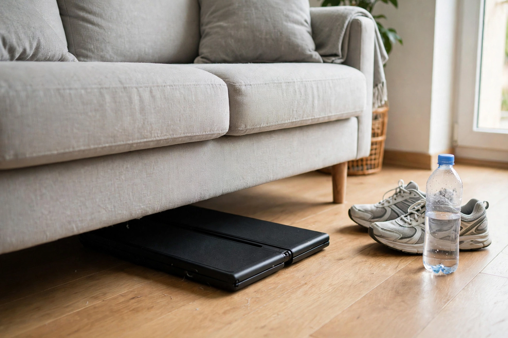
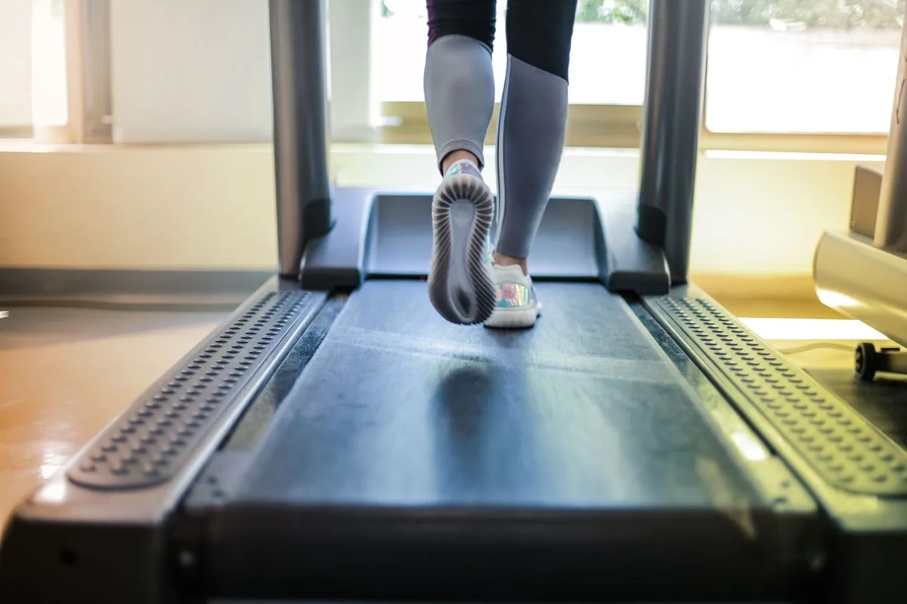

Walking Pads for Small Spaces: Quiet, Foldable, and Actually Usable in an Apartment?
Are walking pads quiet, foldable and actually usable in an apartment?
A walking pad works in a small space if it is quiet, folds flat, and fits under a bed or sofa when you are done. Check the noise first — a loud pad is useless in a flat — then the folded size, then the top speed. Most buyers only ever walk on one, so a running top speed matters less than the marketing suggests.
Our pick: WalkingPad C2 foldable walking treadmill — folds 180° to slide under a bed or sofa, with a 3 HP brushless motor and a 1–4 mph walking range.
Check price on AmazonAffiliate link to be added after approval. No price shown here — check it on Amazon.
At a glance
| Product | Best for | Check price |
|---|---|---|
| WalkingPad C2 | Small-space walking, under-desk | Link pending |
| UREVO Strol 2E | Walking + light running | Link pending |
| DeerRun Q2 Urban (handrail) | Walking with incline | Link pending |
| Bowflex SelectTech 552 | Strength in a flat | Link pending |
| NordicTrack T Series 10 | Running at home | Link pending |
| Concept2 RowErg | Full-body cardio, stores upright | Link pending |

We may earn a commission if you buy through links on this page. As an Amazon Associate I earn from qualifying purchases.
Honest note: three walking-pad models are now verified live on their manufacturer pages (10 Nov 2026 — see Sources). We have not used any of them ourselves, and no hands-on test photos exist yet — the photos in this guide are licensed stock photos and labelled AI illustrations. The three products below are verified small-space fitness picks from our research, included as related options, not as walking pads.
What you need
WalkingPad C2 foldable walking treadmill
Folds 180° to 32.5 × 20.4 × 5.4 in and slides under a bed or sofa. 3 HP brushless motor, 1–4 mph, 220 lb capacity, 47.2 × 15.7 in belt, 55 lb, fully assembled, remote + FootSense + KS Fit app, 1-year warranty.
Watch out: Walking only — 4 mph top speed, not for running. The maker says it "runs quietly" but gives no decibel figure, so treat the noise claim as unverified until we test it.
Check price on AmazonAffiliate link to be added after approval. No price shown here — check it on Amazon.
UREVO Strol 2E smart treadmill (2-in-1)
Folds flat to 4.6 in high with the handlebar down. 2.25 HP motor, 0.6–4 mph walking mode and up to 6.2 mph in running mode, 265 lb capacity, 40.2 × 15 in belt, 47.2 lb, remote with one-click mute, UREVO Sport app.
Watch out: No incline. The handlebar version needs clearance under a desk — check the folded height and your desk setup before buying.
Check price on AmazonAffiliate link to be added after approval. No price shown here — check it on Amazon.
DeerRun Q2 Urban 7% incline walking pad with handrail
The only verified pad in this guide with an incline — 7% manual. 0.6–3.8 mph, 300 lb capacity, 35.43 × 14.96 in belt. Low-noise brushless motor (no HP figure stated by the maker).
Watch out: Pre-order on the maker page — shipping around 29 Jan, and orders "cannot be easily modified or canceled". The fixed handrail makes it better for open home walking than under-desk use (the maker's own FAQ says so). Motor HP and product weight are not stated.
Check price on AmazonAffiliate link to be added after approval. No price shown here — check it on Amazon.
Bowflex SelectTech 552 adjustable dumbbells
Adjustable dumbbells that replace a whole rack in a flat. The small-space strength pick in our research.
Watch out: Check the weight range against what you actually lift. Adjustable dumbbells are not a bargain if you outgrow them in a month.
Check price on AmazonAffiliate link to be added after approval. No price shown here — check it on Amazon.
NordicTrack T Series 10 treadmill
The home-gym treadmill in our research, for readers who want to run, not just walk, in a small space.
Watch out: Check the footprint when folded and the ceiling height where you will use it. A treadmill needs more room than a walking pad.
Check price on AmazonAffiliate link to be added after approval. No price shown here — check it on Amazon.
Concept2 RowErg
The standard rower in our research — evergreen demand, and it stands up for storage.
Watch out: Check the length when in use. It stores small, but it needs a long clear floor while you row.
Check price on AmazonAffiliate link to be added after approval. No price shown here — check it on Amazon.
How to test a walking pad in a flat
- Stand on it and listen. Run it at your normal walking speed and listen from the next room. If you can hear it through a wall, your neighbours can too.
- Fold it and put it away. Fold it, slide it under the bed or sofa, and take it out again. If that takes more than a minute, you will stop doing it.
- Walk on it for 20 minutes. Check the belt stays centred and the deck feels stable. A wobbling deck is a pad you will not use.
- Check the top speed honestly. Most buyers walk at 3–4 km/h. A 12 km/h top speed sounds good and is mostly irrelevant.



Photos still needed
Photos are now in place for the hero, the fold-and-store step, the desk setup and the walking step (see Photo credits). Still missing — needs real at-home photos:
- A phone showing the speed while walking on the pad
- The dumbbells and rower stored in the same small space
- Real test photos of the walking pads in this guide, taken at home
Comparison
| Product | Best for | What to check before you buy | Watch out for |
|---|---|---|---|
| WalkingPad C2 | Small-space walking, under-desk | Folded 32.5 × 20.4 × 5.4 in, 3 HP, 1–4 mph, 220 lb | Walking only; no dB noise figure from the maker |
| UREVO Strol 2E | Walking + light running | Folds to 4.6 in high, 2.25 HP, 0.6–6.2 mph, 265 lb | No incline; handlebar needs desk clearance |
| DeerRun Q2 Urban (handrail) | Walking with incline | 7% manual incline, 0.6–3.8 mph, 300 lb | Pre-order, ~29 Jan ship; handrail, not under-desk; no HP stated |
| Bowflex SelectTech 552 | Strength in a flat | Weight range, adjustment speed | Outgrowing them quickly wastes the money |
| NordicTrack T Series 10 | Running at home | Footprint folded, ceiling height | Needs more room than a walking pad |
| Concept2 RowErg | Full-body cardio, stores upright | Length in use, storage spot | Long floor needed while rowing |
How we picked
Our research scored 25 products across the four test areas on demand, growth, search intent, beatable competition, conversion, content ease, return risk, repeat purchases and platform fit (product-scores.csv). This guide covers 6 of them: 3 walking pads verified live on their manufacturer pages on 10 November 2026 (WalkingPad C2, UREVO Strol 2E, DeerRun Q2 Urban), plus 3 related small-space fitness picks from the same research scores.
| Products scored in our research | Products in this guide | Hands-on tests run |
|---|---|---|
| 25 | 6 | 0 — none yet |
What we have not done yet: no product in this guide has been tested hands-on by us. When we test one at home, this box will say so, with the date.
Troubleshooting
The belt drifts to one side
Stop, check the belt is centred, and adjust it with the tool that came in the box. A drifting belt wears out fast if you ignore it.
It is louder than expected
Check the floor — a hard floor with no mat is louder than carpet. A thin exercise mat under the pad often fixes it.
Frequently asked questions
Is a walking pad a replacement for a treadmill?
For walking, yes. For running, no — most walking pads are not built for running speeds, and the deck is shorter. Buy the tool for the job you will actually do.
Can I use a walking pad under a standing desk?
Yes, if it is quiet and the speed stays low. Check the desk height with the pad in place — you will be a few centimetres higher than standing on the floor.
Sources
- HomeTryout affiliate business opportunity report, 9 Nov 2026 — product scores (product-scores.csv).
- Google Holiday 100, 9 Nov 2026 — fitness tracker searches up 155% (reported in the opportunity report).
- WalkingPad C2 — manufacturer page walkingpad.com, verified live 10 Nov 2026: 3 HP brushless, 1–4 mph, 220 lb, 47.2 × 15.7 in belt, folded 32.5 × 20.4 × 5.4 in, 55 lb. Price seen live that day — recorded in our internal notes, not typed here.
- UREVO Strol 2E — manufacturer page urevo.com, verified live 10 Nov 2026: 2.25 HP, 0.6–6.2 mph, 265 lb, 40.2 × 15 in belt, folds to 4.6 in high, 47.2 lb, no incline. Price seen live that day — recorded in our internal notes, not typed here.
- DeerRun Q2 Urban 7% incline with handrail — manufacturer page deerruntreadmill.com, verified live 10 Nov 2026: 0.6–3.8 mph, 300 lb, 35.43 × 14.96 in belt, 7% manual incline, pre-order shipping around 29 Jan. No motor HP or product weight stated. Price seen live that day — recorded in our internal notes, not typed here.
- Sperax models were NOT verified and are not in this guide. A review site mentioned a CPSC warning on specified Sperax Pro, Q1, RM-01 and RM-02 models (April 2026) — not verified directly against CPSC. Do not add Sperax without a direct CPSC check.
Keep going
 Prep & Power
Prep & PowerPortable Power Stations for a 72-Hour Home Kit: What Actually Matters Before You Buy
What actually matters when buying a portable power station for a 72-hour home kit: size, recharge, and what must stay on.
Read the guide → Kitchen & Cleaning
Kitchen & CleaningRobot Vacuum and Mop, Tested in a Real Home: What to Check Before You Buy
What to check before you buy a robot vacuum and mop: thresholds, pet hair, mop contact, and noise.
Read the guide → Pet Tech
Pet TechAutomatic Litter Boxes, Tested at Home: What a Cat Owner Should Know Before You Buy
What a cat owner should know before buying an automatic litter box: size, noise, running costs, and the cat.
Read the guide →